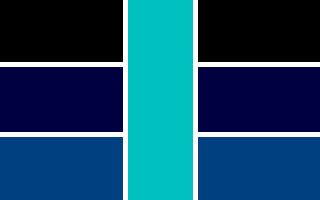

This is the website I (A29854) made for a group I am a part of - the Allies. We are mainly on Scratch and I have this because of Scratch's moderation and policy (one of the reasons we exist in the first place) - there are certain important things that I cannot share on Scratch but I can here. Also, some things are just difficult or impractical to try to show on Scratch (like The Allies' Constitution), so they are here as well. If you are wondering what happened to the Scratch studio named "The Allied Society," the studio simply got renamed.
NOTE: ALL members of The Allies must thoroughly read and understand the Constitution to be an Ally.
*** Under Construction ***